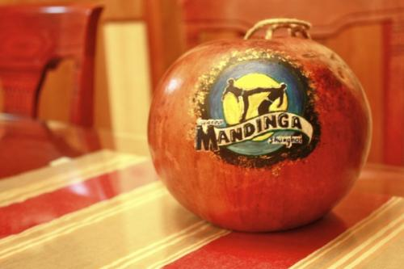
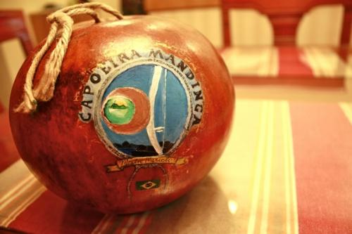

Как покрасить беримбау? Красим вергу (берибу) и кабасу

Топик с вопросом к сообществу. Как правильно красить беримбау (берибу и кабасу)? Жду ваших советов в комментариях.
— Каков процесс и последовательность покраски?
— Сначала зашкурить потом покрывать краской?
— Какой тип краски? (Акрил, гуашь, другое)
Ответ далее:Акрил в первую очередь. На воде, быстро сохнет, без лишнего «давления» на дерево.
Если кабаса покрыта лаком, то можно поверх, либо снять лак. Его можно снять либо шкуркой, как обычно, либо жидкостью, которая жутко пахнет, из рода растворителей.
После нанесения рисунок покрывают (банально звучит) тонким слоем лака. Использовал мебельный.
Но есть супертема у тех, кто занимается реставрацией музинструментов — щелачный метод (думаю ключевое слово shellac). Понял, что этот метод максимально удерживает «хорошие» свойства дерева.
— AHTapuyc
Из личного опыта. Моя девушка (Menina) красила кабасу акрилом, но кабасы были уже лакированные и получалось неплохо, но краска ложится плохо, трескается. Вот примеры:

Топик с похожей темой: Скорая помощь — сломалась верга, что делать?